Chapter 5 資料視覺化分析
繪圖文法是讓一個圖形容易思考, 合理討論與溝通的抽像規則. Leland Wilkinson (1999), The Grammar of Graphics. {R} 內建許多繪圖工具函式, 這些繪圖工具可以顯示各種統計繪圖並且自建一些全新的圖. {R} 繪圖工具函式之特色是用同一個繪圖函式, 對不同類型的物件, 可以作出不同的圖形. 繪圖工具函式既可互動式使用, 也可以批次處理使用. 在許多情況下, 使用互動式 (interactive) 執行 {R} 的圖形繪製, 是一個相當有效的方式.
{R} 基本繪圖工具包含 高階繪圖函式 與 低階繪圖函式, 或是合併二種方式形成互動式繪圖函式:
- 高階繪圖函式 (high-levlel plotting functions): 直接形成完整圖形, 圖形包括坐標軸, 標籤, 標題等等.
- 低階繪圖函式 (low-level plotting functions): 是將 點, 線, 座標與標籤等逐步形成圖形.
繪圖工具函式所產生之圖形結果,
無法指定成物件,
必須送到
圖形裝置
(graphic device),
圖形裝置可以是一個視窗或某一特定格式之圖形檔案,
{R} 可以將圖形儲存在各種圖形裝置,
包含 pdf, ps, jpg, png 檔案等等.
在 {R} 中還有有一個獨立的強大之繪圖系統,
grid
套件,
類似
Splus
裏的
Trellis
繪圖系統.
根據 grid
套件,
所建構的另一個較容易使用之
lattice,
ggplot2 等.
可以產生多重漂亮起專業的統計繪圖.
目前主流使用
tidyverse 套件系統
包含許多不同套件,
提供資料科學一些實用的函式,
其中 ggplot2 為視覺化分析套件.
以套件 ggplot2 為基礎, 已經衍生出許多其他繪圖套件.
5.1 視覺化分析原則
Edward Tufte (2006) 在 Beautiful Evidence 書中提出一些視覺化分析原則.
- 顯示比較.
- 顯示因果關係或關聯性.
- 顯示多變量資料.
- 整合不同資料的證據.
- 描述與紀錄證據.
- 顯示實質內容最重要.
5.2 繪圖套件 ggplot2
繪圖套件 ggplot2 是一個龐大的繪圖系統,
開始學習 ggplot2 的程式語言會有些困難,
但中等程度複雜的圖形, 使用 ggplot2 通常會比使用 R base 繪圖系統容易.
統計繪圖學習方式可從已經發表且有程式碼的圖形學起,
例如, https://www.r-graph-gallery.com/index.html.
ggplot2 的概念是使用結構性的語法,
先指定資料, 然後指定變數, 再指定幾何元素,
最後處裡標題與標注數據以及背景的主題式樣.
必要時考慮分組呈現相同圖形.
ggplot2 的概念如同繪畫, 可隨時
使用 + 加上圖層 (layers),
更新或取代原有圖層.
- data: 選取資料.
- mapping (aes): 選取資料內變數進行對應或映射
- x-變數, y-變數, treat, fill, shape, size, etc.
- geoms: 幾何物件 geometric object
- point, line, bar, shapes, ribbon, polygon, smooth, text etc.
- stat: 計算統計量/變數轉換, statistics
- position: 調整位置 position adjustments.
Table: ggplot2 指令與引數
函式 ggplot() 基本程式如下.
ggplot(data = data_name,
aes(x = variable_name,
y = variable_name,
... <other variable_name mappings>)) +
geom_<type>() +
...Prentice (1973) 報告一個研究, 關於年長退伍軍人罹患肺癌, 且無法接受手術之臨床試驗, 病患在榮民醫院隨機接受標準治療方法或新的化學治療方法, 比較治療的主要結果變數為死亡時間, 變數名稱列在表. 資料在檔案 survVATrial.csv.
| 變數 | 描述 |
|---|---|
| treat (therapy) | 治療組別: 0 = 標準; 1 = 新治療 |
| cellcode | 細胞型態; 1 = 鱗狀細胞; 2 = 小細胞; 3 = 腺體細胞; 4 = 大細胞 |
| time | 存活時間, 診斷日期至死亡日期, 單位以日計 |
| censor | 設限狀態: 0 = 設限; 1 = 死亡 |
| kps | Karnofsky performance score, 診斷時身體狀態表現的分數 |
| diagtime | 診斷到隨機分配的時間, 以月計 |
| age | 診斷時的年齡 (以年計) |
| prior | 先前是否接受治療; 0 = 無; 1 = 有 |
dd <- read.table("./Data/survVATrial.csv",
header = TRUE,
sep = ",",
quote = "\"'",
dec = ".",
row.names = NULL,
# col.names,
as.is = TRUE,
# as.is = !stringsAsFactors,
na.strings = c(".", "NA"))
head(dd)
## treat cellcode time censor diagtime kps age prior
## 1 0 1 72 1 60 7 69 0
## 2 0 1 411 1 70 5 64 10
## 3 0 1 228 1 60 3 38 0
## 4 0 1 126 1 60 9 63 10
## 5 0 1 118 1 70 11 65 10
## 6 0 1 10 1 20 5 49 0
str(dd)
## 'data.frame': 137 obs. of 8 variables:
## $ treat : int 0 0 0 0 0 0 0 0 0 0 ...
## $ cellcode: int 1 1 1 1 1 1 1 1 1 1 ...
## $ time : int 72 411 228 126 118 10 82 110 314 100 ...
## $ censor : int 1 1 1 1 1 1 1 1 1 0 ...
## $ diagtime: int 60 70 60 60 70 20 40 80 50 70 ...
## $ kps : int 7 5 3 9 11 5 10 29 18 6 ...
## $ age : int 69 64 38 63 65 49 69 68 43 70 ...
## $ prior : int 0 10 0 10 10 0 10 0 0 0 ...
dd$treat <- factor(dd$treat, labels = c("placebo", "test"))
dd$cellcode <- factor(dd$cellcode,
labels = c("squamous", "small", "adeno", "large"))
dd$censor <- factor(dd$censor, labels = c("survival", "dead"))
dd$prior <- factor(dd$prior, labels = c("no", "yes"))
head(dd)
## treat cellcode time censor diagtime kps age prior
## 1 placebo squamous 72 dead 60 7 69 no
## 2 placebo squamous 411 dead 70 5 64 yes
## 3 placebo squamous 228 dead 60 3 38 no
## 4 placebo squamous 126 dead 60 9 63 yes
## 5 placebo squamous 118 dead 70 11 65 yes
## 6 placebo squamous 10 dead 20 5 49 no
str(dd)
## 'data.frame': 137 obs. of 8 variables:
## $ treat : Factor w/ 2 levels "placebo","test": 1 1 1 1 1 1 1 1 1 1 ...
## $ cellcode: Factor w/ 4 levels "squamous","small",..: 1 1 1 1 1 1 1 1 1 1 ...
## $ time : int 72 411 228 126 118 10 82 110 314 100 ...
## $ censor : Factor w/ 2 levels "survival","dead": 2 2 2 2 2 2 2 2 2 1 ...
## $ diagtime: int 60 70 60 60 70 20 40 80 50 70 ...
## $ kps : int 7 5 3 9 11 5 10 29 18 6 ...
## $ age : int 69 64 38 63 65 49 69 68 43 70 ...
## $ prior : Factor w/ 2 levels "no","yes": 1 2 1 2 2 1 2 1 1 1 ...5.3 類別變數
類別變數描述性統計主要是分析變數的 分配 或 分佈 (distribution), 分配敘述變數的觀測數值以及這些觀測數值出現的頻率. 類別變數描述性統計圖表常見為 頻率表 (frequency table), 長條圖 (bar plot) 與圓形圖 (pie chart).
對統計人員而言, 類別變數使用圓形圖呈現. 是非常不好的資料呈現方式, 使用頻率表 (Table) 或長條圖較佳.
5.3.1 單一類別變數
- 單一類別變數: 檢視類別水準的頻率大小.
## pie chart: ggplot2 do not have a simple geom_pie()
## use R base pie()
cellcode.tab <- table(dd$cellcode)
cellcode.tab
##
## squamous small adeno large
## 35 48 27 27
prop.table(cellcode.tab)
##
## squamous small adeno large
## 0.2555 0.3504 0.1971 0.1971
round(prop.table(cellcode.tab), 3)
##
## squamous small adeno large
## 0.255 0.350 0.197 0.197
barplot(cellcode.tab)pie(cellcode.tab)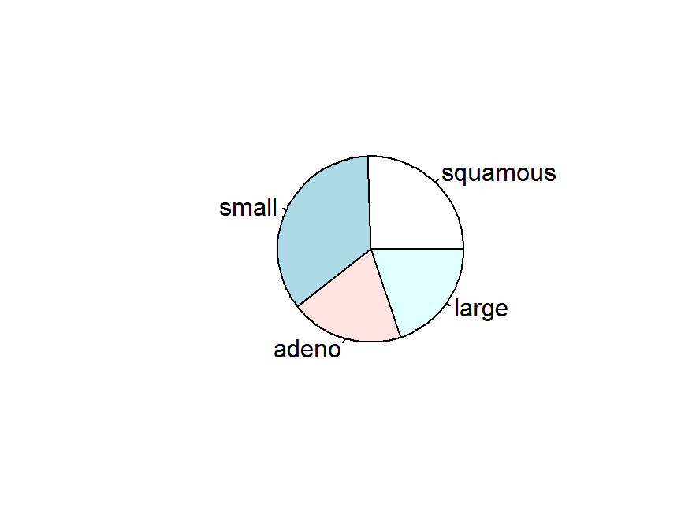
library(ggplot2)
## bar chart
ggplot(data = dd, aes(x = cellcode)) +
geom_bar()ggplot(data = dd, aes(x = cellcode)) +
geom_bar(fill = "blue") +
coord_flip()ggplot(data = dd, aes(y = cellcode)) +
geom_bar(fill = "red") # pie chart: no simple solution
cell.freq <- data.frame(cellcode.tab)
names(cell.freq)[1] <- "cellcode"
cell.freq
## cellcode Freq
## 1 squamous 35
## 2 small 48
## 3 adeno 27
## 4 large 27
ggplot(data = cell.freq, aes(x = "", y = Freq, fill = cellcode)) +
geom_bar(width = 1, stat = "identity") +
coord_polar("y", start = 0)ggplot(data = cell.freq, aes(x = "", y = Freq, fill = cellcode)) +
geom_bar(stat = "identity", width = 1) +
coord_polar(theta = "y", start = 0) +
theme_void() # remove background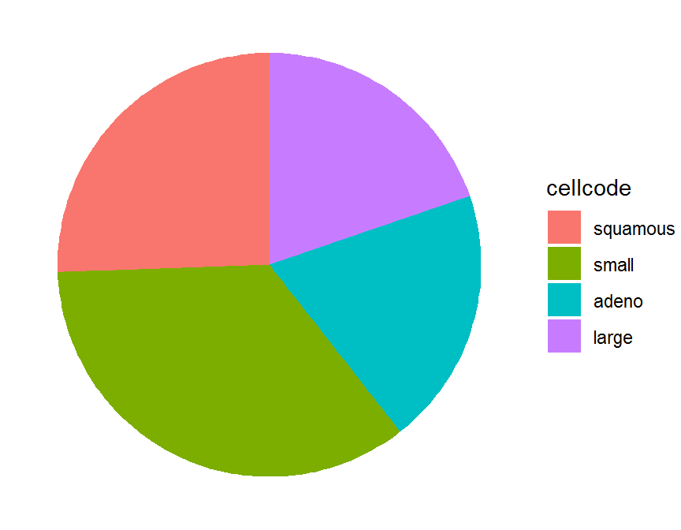
5.3.2 多類別變數
- 雙類別變數: 檢視變數聯合水準的頻率大小, 檢視條件水準的頻率大小.
## two categorical vtriables
table(dd$treat)
##
## placebo test
## 69 68
table(dd$cellcode)
##
## squamous small adeno large
## 35 48 27 27
twoway.tab <- table(dd$treat, dd$cellcode)
twoway.tab
##
## squamous small adeno large
## placebo 15 30 9 15
## test 20 18 18 12
## # cell proportion
cell.prop <- prop.table(twoway.tab, margin = NULL)
round(cell.prop, 3)
##
## squamous small adeno large
## placebo 0.109 0.219 0.066 0.109
## test 0.146 0.131 0.131 0.088
## conditional on row sum to 1
cond_row_prop <- prop.table(twoway.tab, margin = 1)
round(cond_row_prop, 3)
##
## squamous small adeno large
## placebo 0.217 0.435 0.130 0.217
## test 0.294 0.265 0.265 0.176
apply(cond_row_prop, 1, sum) # rows sum to 1
## placebo test
## 1 1
## conditional on column sum to 1
cond_col_prop <- prop.table(twoway.tab, margin = 2)
round(cond_col_prop, 3)
##
## squamous small adeno large
## placebo 0.429 0.625 0.333 0.556
## test 0.571 0.375 0.667 0.444
apply(cond_col_prop, 2, sum) # cols sum to 1
## squamous small adeno large
## 1 1 1 1
## side-by-side bar plot
barplot(twoway.tab,
beside = TRUE,
main = "treat by cellcode",
xlab = "cell type")
# Stacked Bar Plot
barplot(twoway.tab,
beside = FALSE,
main = "treat by cellcode",
xlab = "cell type")## ggplot2
## Automatically stack
library(ggplot2)
ggplot(data = dd, aes(x = cellcode, fill = treat)) +
geom_bar()
ggplot(data = dd, aes(x = cellcode, fill = treat)) +
geom_bar(position = "stack")## side-by-side
ggplot(data = dd, aes(x = cellcode, fill = treat)) +
geom_bar(position = "dodge")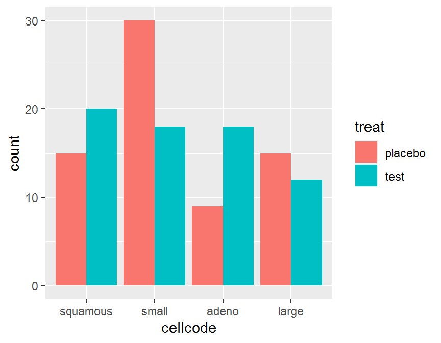
ggplot(data = dd, aes(x = cellcode, fill = treat)) +
geom_bar(position = "fill")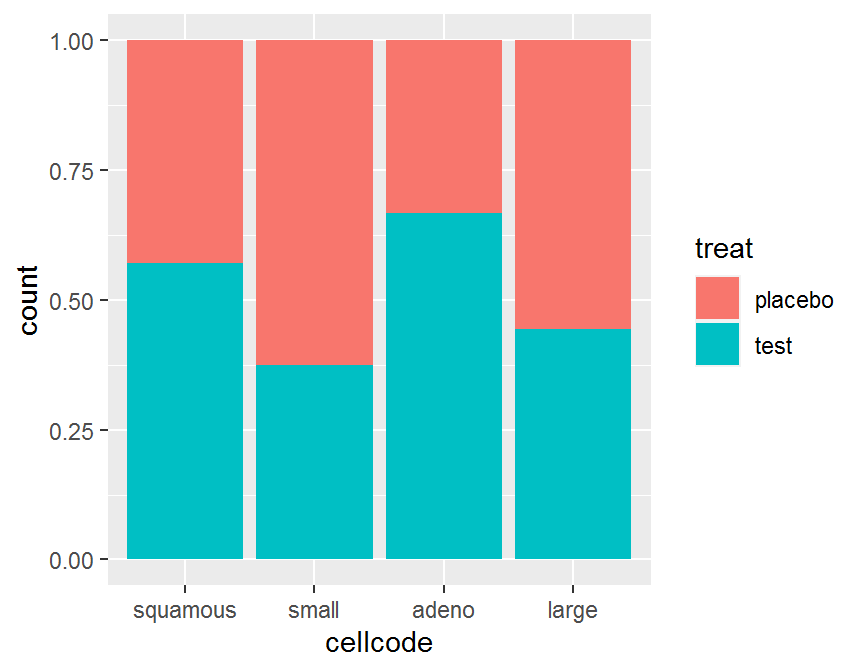
5.4 連續變數
連續變數描述性統計主要是分析變數的 分配 或 分佈 (distribution), 分配敘述變數的觀測數值以及這些觀測數值出現的頻率. 連續變數描述性統計圖表常見為 點狀圖 (dot plot), 枝葉圖 (stem-and-leaf), 次數分配表, 直方圖 (histogram), 盒鬚圖 (box plot), 密度圖 (density plot), 平均值, 變異數等. 對連續變數的描述, 若樣本數較少, 常使用點狀圖或枝葉圖. 目前多數為大數據, 點狀圖或枝葉圖較少使用, 但在實驗設計的數據呈現仍然非常重要.
5.4.1 單連續變數
- 單連續變數: 檢視中央趨勢, 離散程度 偏度, 峰度.
## use R base pie()
## histogram
hist(dd$time,
freq = TRUE,
main = "time histogram",
xlab = "time")hist(dd$time,
freq = FALSE,
main = "time histogram",
xlab = "time")
# box plot
boxplot(dd$time,
xlab = "time")
# QQ plot
qqnorm(dd$time,
main = "Normal QQ Plot: time")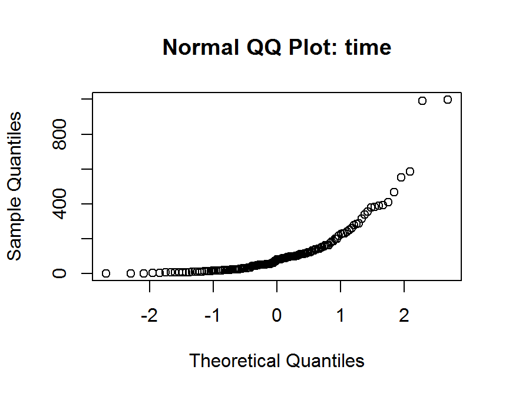
# density plot
plot(density(dd$time),
pch = 16,
main = "Density Plot",
xlab = "time",
ylab = "density")## ggplot2
## histogram
ggplot(data = dd, aes(x = time)) +
geom_histogram()## box plot
ggplot(dd, aes(x = "", y = time)) +
geom_boxplot()## violin plot
ggplot(dd, aes(x = "", y = time)) +
geom_violin()## density plot
ggplot(data = dd, aes(x = time)) +
geom_freqpoly()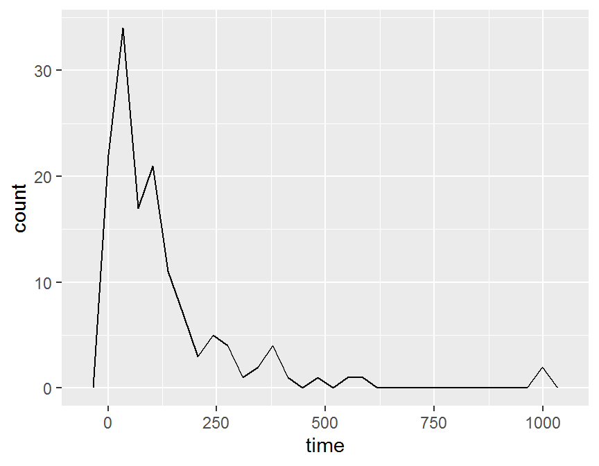
ggplot(data = dd, aes(x = time)) +
stat_bin(geom = "area")ggplot(data = dd, aes(x = time)) +
stat_bin(geom = "line")5.4.2 二連續變數
- 散佈圖 scatter plot = X & Y = 連續變數
- 雙連續變數: 檢視二個變數關聯性, 大小, 方向, 趨勢.
## R base
## scatter plot
## basic
plot(x = dd$diagtime, y = dd$time)## formula y ~ x, data = data_name)
plot(time ~ diagtime, data = dd)## ggplot
ggplot(data = dd, aes(x = diagtime, y = time)) +
geom_point()ggplot(data = dd, aes(x = diagtime, y = time)) +
geom_point(size = 5)ggplot(data = dd, aes(x = diagtime, y = time)) +
geom_jitter() 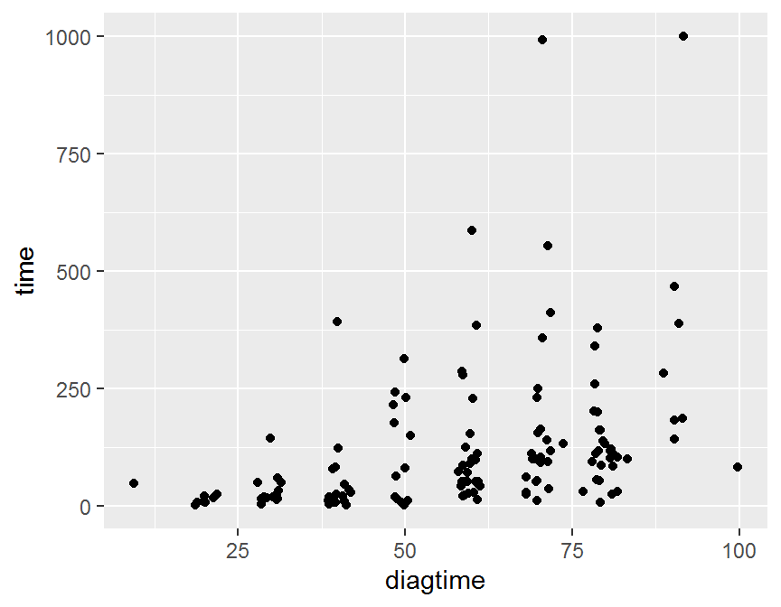
ggplot(data = dd, aes(x = diagtime, y = time)) +
geom_jitter(size = 5, alpha = 1/2) 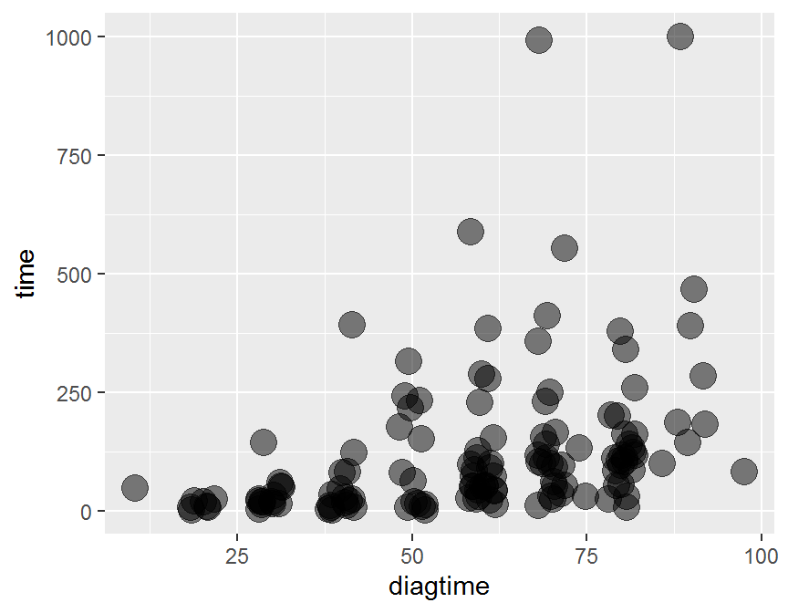
ggplot(data = dd, aes(x = diagtime, y = time)) +
geom_jitter(size = 5, alpha = 0.3) +
geom_rug(col = "steelblue", alpha = 0.1, size = 1.5)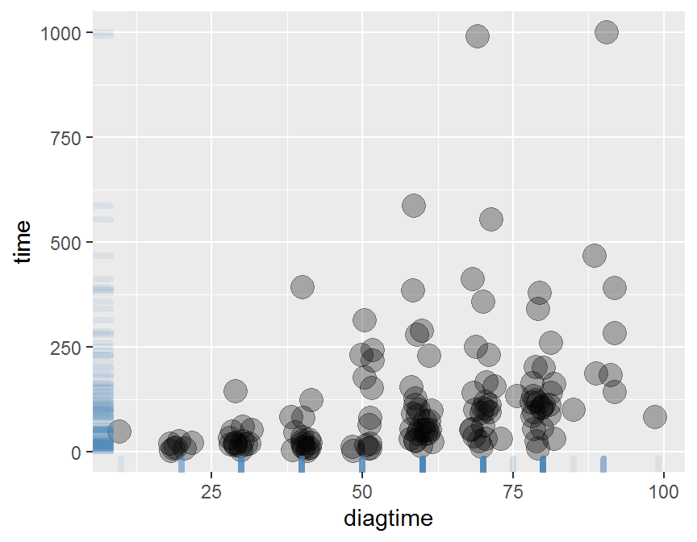
# add linear line or smoothing line
ggplot(data = dd, aes(x = diagtime, y = time)) +
geom_point() +
geom_smooth(method = "lm")ggplot(data = dd, aes(x = diagtime, y = time)) +
geom_point() +
geom_smooth(se = FALSE)ggplot(data = dd, aes(x = diagtime, y = time)) +
geom_point() +
geom_smooth(method = "lm", se = FALSE) +
geom_smooth(se = FALSE)
## scatter plot + marginal distribution
library(ggExtra)
# classical
p <- ggplot(dd, aes(x = diagtime, y = time)) +
geom_point() +
theme(legend.position = "none")
# scatter plot + marginal histogram
ggMarginal(p, type = "histogram", color = "purple")
# scatter plot + marginal density
ggMarginal(p, type = "density")
# scatter plot + marginal boxplot
ggMarginal(p, type = "boxplot")5.4.3 三連續變數
- 多連續變數: 檢視成對變數關聯性, 大小, 方向, 趨勢.
## pairwise scatter plot
## R base
con.df = dd[, c("time", "diagtime", "kps", "age")]
cor.mat = cor(con.df, use = "complete", method = "pearson")
round(cor.mat, 3)
## time diagtime kps age
## time 1.000 0.382 -0.046 -0.068
## diagtime 0.382 1.000 -0.184 -0.095
## kps -0.046 -0.184 1.000 -0.033
## age -0.068 -0.095 -0.033 1.000
pairs(con.df)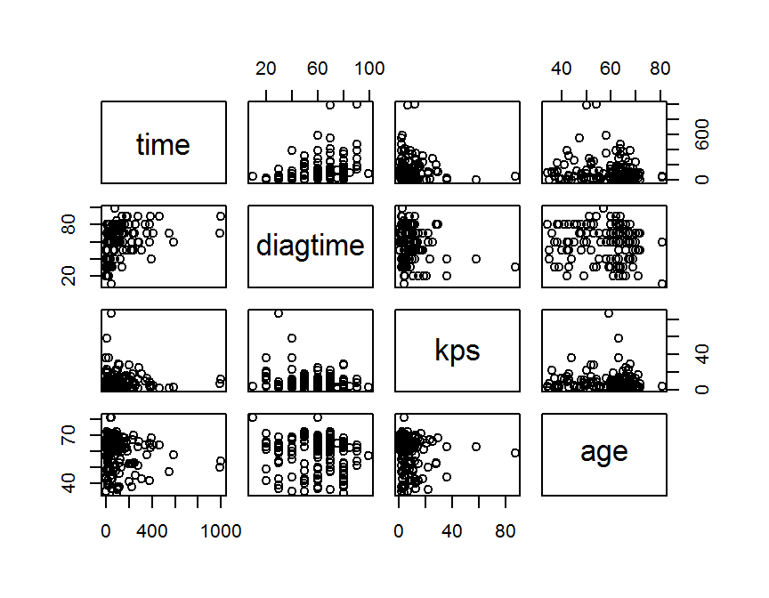
## ggplot2
library(GGally)
GGally::ggpairs(data = con.df)GGally::ggcorr(data = con.df,
method = c("complete", "pearson"))## Correlogram
library(corrgram)
corrgram(x = dd,
order = TRUE,
lower.panel = panel.shade,
upper.panel = panel.pie,
text.panel = panel.txt,
main = "1. VA Lung Cancer Trial")corrgram(x = dd,
order = TRUE,
lower.panel = panel.ellipse,
upper.panel = panel.pts,
text.panel = panel.minmax,
main = "2. VA Lung Cancer Trial")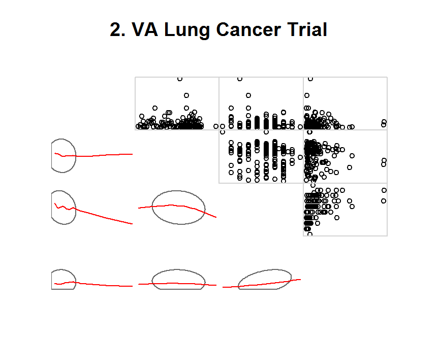
corrgram(x = dd,
order = NULL,
lower.panel = panel.shade,
upper.panel = NULL,
text.panel = panel.txt,
main = "3. VA Lung Cancer Trial")5.5 混合變數
多變量視覺化分析
- 一連續 + 一類別
- 二連續 + 一類別
- 二類別 + 一連續 = 一連續 + 一類別
- 多變數
5.5.1 一連續 + 一類別
# one continuous + one categorical
ggplot(data = dd, aes(x = time)) +
geom_histogram(aes(fill = treat))
ggplot(data = dd, aes(x = time, fill = treat)) +
geom_histogram( color = "#e9ecef",
alpha = 0.6,
position = 'identity')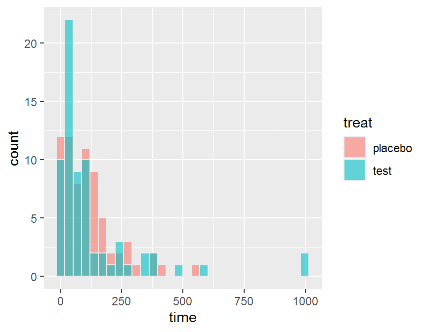
ggplot(data = dd, aes(x = time, color = treat, fill = treat)) +
geom_histogram()# side-by-side boxplot
ggplot(data = dd, aes(x = treat, y = time, fill = treat)) +
geom_boxplot()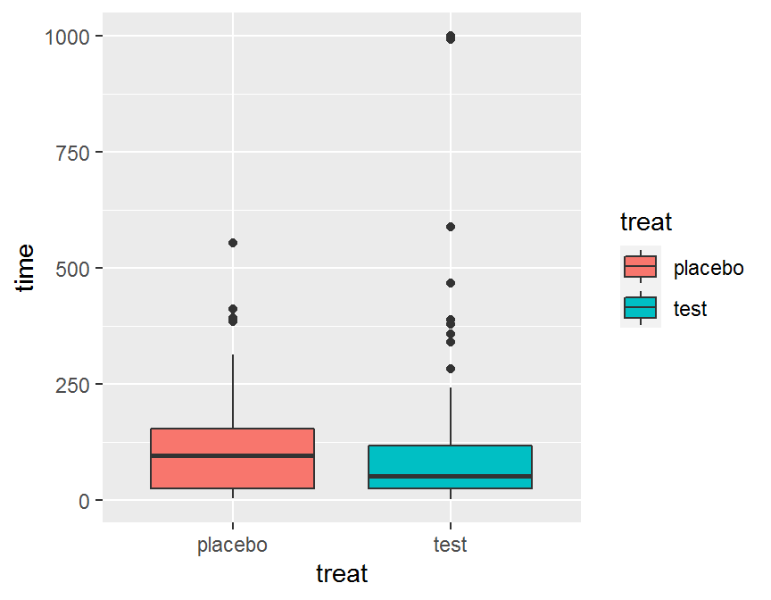
ggplot(data = dd, aes(x = treat, y = time, fill = treat)) +
geom_boxplot() +
geom_jitter(color = "purple", size = 2, alpha = 0.8)
#
ggplot(data = dd, aes(x = treat, y = time, fill = treat)) +
geom_violin()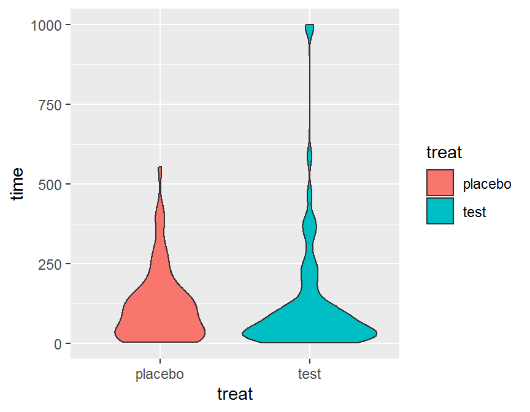
ggplot(data = dd, aes(x = treat, y = time, fill = treat)) +
geom_violin() +
geom_jitter(color = "purple", size = 2, alpha = 0.8) +
ggtitle("Violin chart by treatment") +
xlab("treatment")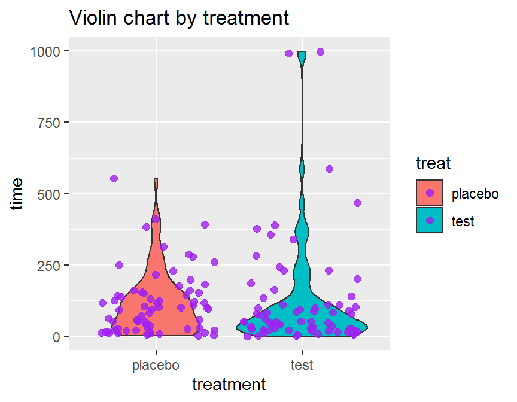
5.5.2 二連續 + 一類別
## ggplot2
## two continuous + one categorical
ggplot(data = dd, aes(x = diagtime, y = time, color = treat)) +
geom_point(size = 4)ggplot(data = dd, aes(x = diagtime, y = time, color = treat)) +
geom_jitter(size = 4)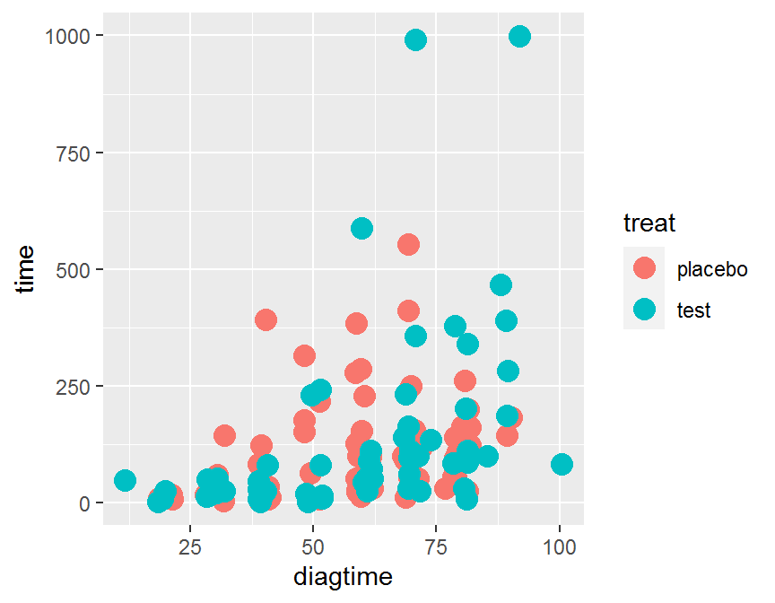
ggplot(data = dd, aes(x = diagtime, y = time,
color = treat, shape = treat)) +
geom_jitter(alpha = 1/2, size = 3) # add linear line or smoothing line
ggplot(data = dd, aes(x = diagtime, y = time,
color = treat, shape = treat)) +
geom_jitter(alpha = 1/2, size = 3) +
geom_smooth(method = "lm")ggplot(data = dd, aes(x = diagtime, y = time,
color = treat, shape = treat)) +
geom_jitter(alpha = 1/2, size = 3) +
geom_smooth(method = "lm", se = FALSE)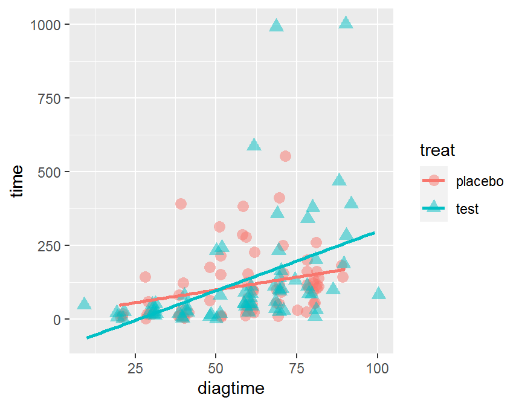
#
ggplot(data = dd, aes(x = diagtime, y = time,
color = treat, shape = treat)) +
geom_jitter(alpha = 1/2, size = 3) +
geom_smooth(se = FALSE)# BAD! too many lines
ggplot(data = dd, aes(x = diagtime, y = time,
color = treat, shape = treat)) +
geom_jitter(alpha = 1/2, size = 3) +
geom_smooth(method = "lm", se = FALSE) +
geom_smooth(se = FALSE)
# classical
p <- ggplot(dd, aes(x = diagtime, y = time, color = treat)) +
geom_point(size = 5)
# scatter plot + marginal histogram
ggExtra::ggMarginal(p, type = "histogram", color = "purple")- Try by yourself!
# more advanced
my_fn <- function(data, mapping, ...){
p <- ggplot(data = data, mapping = mapping) +
geom_point() +
geom_smooth(method = loess, se = FALSE, fill = "red", color = "red", ...) +
geom_smooth(method = lm, se = FALSE, fill = "blue", color = "blue", ...)
p
}
GGally::ggpairs(data = con.df,
lower = list(continuous = my_fn))## Bubble plot
ggplot(data = dd, aes(x = diagtime, y = time, size = age)) +
geom_point(alpha = 0.3) +
scale_size(range = c(.1, 15), name = "Age Bubbles")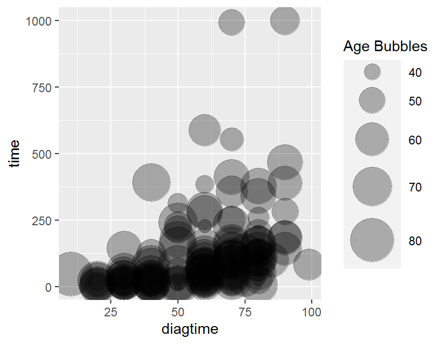
ggplot(data = dd, aes(x = diagtime, y = time, size = age)) +
geom_point(alpha = 0.3) +
scale_size(range = c(.1, 15), name = "Age Bubbles")ggplot(data = dd, aes(x = diagtime, y = time, size = age, color = treat)) +
geom_point(alpha = 0.3) +
scale_size(range = c(.1, 24), name = "")
5.6 分組繪圖
- 將資料依據組別分割成子資料集
- 將每個子資料集繪製在不同的圖格
- 將所有子資料集的圖格合併呈現
# plot by treat
ggplot(data = dd, aes(x = diagtime, y = time)) + geom_jitter() +
facet_grid(. ~ treat)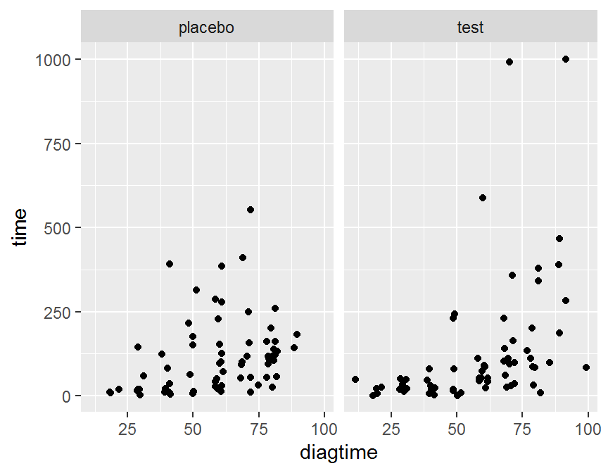
ggplot(data = dd, aes(x = diagtime, y = time)) + geom_jitter() +
facet_grid(treat ~ .)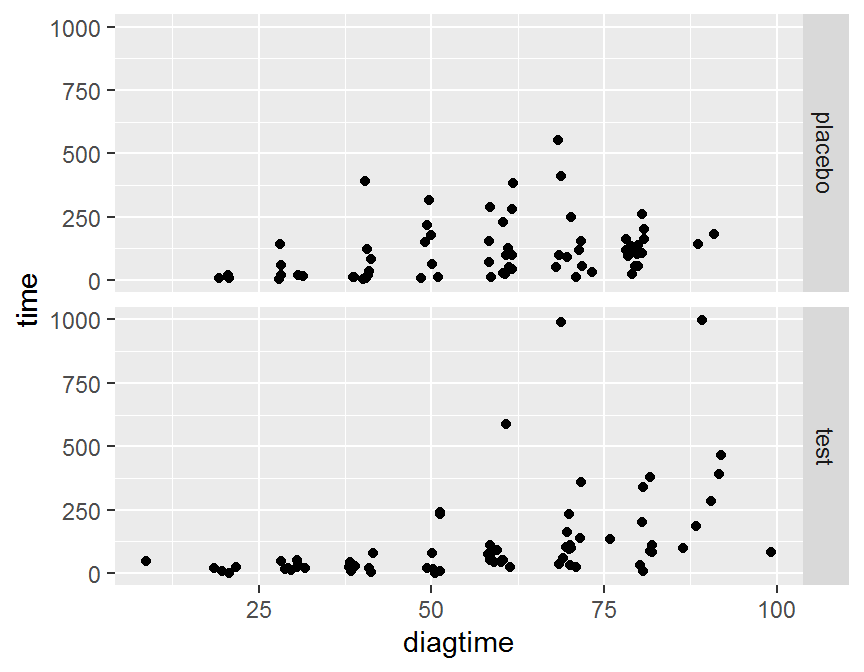
# plot by cellcode
ggplot(data = dd, aes(x = diagtime, y = time)) + geom_jitter() +
facet_grid(. ~ cellcode)# two factors
ggplot(data = dd, aes(x = diagtime, y = time)) + geom_jitter() +
facet_grid(treat ~ cellcode)